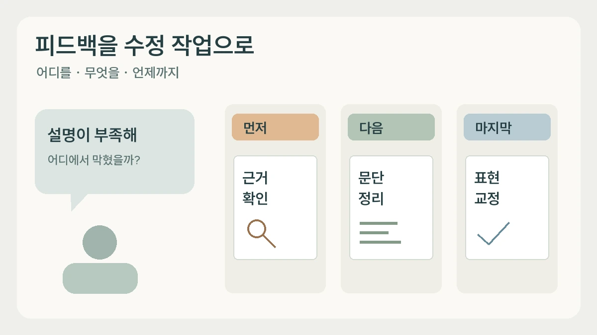

피드백을 받았는데 어디부터 고칠까? 탐구보고서 수정 요청과 우선순위
“설명이 부족하다”는 조언을 받고 배경만 늘렸다면? 피드백을 위치·작업·완료 기준이 있는 수정 요청으로 바꾸고, 가상 안내문 비교의 수정 전후와 우선순위, 서로 다른 조언을 판단하는 카드로 실제 변경을 확인합니다.

보고서를 읽은 친구가 “설명이 부족해”라고 말했습니다. 그래서 배경 설명을 더 붙였는데, 다시 읽은 친구는 여전히 결론을 이해하지 못합니다. 부족했던 것은 분량이 아니라 결과에서 결론으로 넘어가는 근거였을 수 있습니다. 피드백을 받았다는 사실과 필요한 부분을 고쳤다는 사실은 다릅니다.
이번 칼럼은 모호한 피드백을 위치·작업·완료 기준이 있는 수정 요청으로 바꾸고, 고칠 순서를 정하는 방법을 다룹니다. 문단 하나를 구성하는 법이나 제목을 다듬는 법이 아니라, 초고를 읽은 사람의 말을 실제 수정으로 옮기는 단계입니다. 아래 대화·안내문·수정 문장은 편집팀이 만든 교육용 가상 예시이며 실제 학생의 과제나 교사의 평가가 아닙니다. 학교 과제의 필수 조건과 담당 교사의 안내를 먼저 확인하세요.
“어때?” 대신 독자가 할 일을 정해 줍니다
초고 전체를 건네며 잘 썼는지만 물으면 칭찬이나 인상으로 답이 끝나기 쉽습니다. 이번에 확인하려는 문제 하나와 읽을 범위를 함께 건네 보세요. 맞춤법을 봐 달라는 요청과 결론의 근거를 찾아 달라는 요청은 서로 다른 읽기를 요구합니다.
- 질문 점검: “서론만 읽고 내가 확인하려는 질문을 한 문장으로 적어 줄래? 네가 적은 문장과 내 질문이 같은지 볼게.”
- 추론 점검: “이 결론을 뒷받침하는 결과를 본문에서 표시해 줘. 찾지 못하거나 중간 설명이 빠졌다고 느낀 곳도 남겨 줘.”
- 방법 점검: “어떤 자료를 골라 무엇을 비교했는지 네 말로 설명해 줘. 문단에 없는 조건은 짐작하지 말고 질문으로 써 줘.”
독자가 다르게 이해했다면 곧바로 구두로 설명해 버리지 마세요. 먼저 어느 문장 때문에 그렇게 읽었는지 표시를 부탁합니다. 글에 없는 설명을 말로 보충하면, 글 자체의 누락을 찾기 어렵습니다. 반대로 독자가 내용을 낯설어한다는 이유만으로 모든 교과 개념을 처음부터 다시 설명할 필요도 없습니다. 과제에서 예상한 독자와 필요한 배경지식을 기준으로 판단합니다.
평가의 말을 수정 작업의 말로 바꿉니다
Purdue OWL은 받은 의견을 자기 말로 다시 쓰고, 실행할 항목을 목록으로 만들며, 중요도에 따라 순서를 정하는 방식을 안내합니다.[1] 이를 학교 보고서에 적용할 때는 “더 자세히”를 그대로 할 일로 적지 않고, 어디에서 무엇을 확인하거나 바꿀지 적어 보세요.
예를 들어 “결론이 갑작스럽다”는 말을 들었다면 다음처럼 되묻습니다. “결과에서 확인되지 않은 말이 나왔어, 아니면 결과의 뜻을 설명하는 문장이 빠졌어?” 첫 문제라면 주장을 줄이거나 자료를 확인해야 하고, 두 번째라면 근거가 질문에 주는 답을 풀어 써야 합니다. 두 경우 모두 문장을 길게 만드는 일부터 시작하지 않습니다.
- 받은 말: “자료가 약해.” → 확인할 작업: 결론의 핵심 주장 옆에 근거 위치를 적고, 원자료가 같은 대상·지표를 다루는지 대조한다.
- 받은 말: “글이 반복돼.” → 확인할 작업: 각 문단의 중심 생각을 한 줄씩 적고, 같은 역할의 문단을 합칠지 결정한다.
- 받은 말: “전문적으로 써.” → 확인할 작업: 뜻이 모호한 용어를 찾고 정의·단위를 맞춘다. 어려운 낱말을 늘리는 작업으로 해석하지 않는다.
이 전환은 피드백의 뜻을 확인하기 위한 편집팀의 연습입니다. 상대가 의도한 뜻과 다를 수 있으므로, 가능하면 고치기 전에 “나는 이렇게 이해했는데 맞아?”라고 확인합니다. “독창성이 없다” 같은 평가도 문장의 말투만 바꾸면 해결되는지, 질문과 분석 기준을 다시 봐야 하는지부터 구분하세요.
가상 사례: 설명을 늘렸는데도 결론이 그대로라면
한 보고서가 분리배출 안내문 A·B를 읽고, 조건이 붙은 지시가 있는지 비교했다고 가정합니다. A에는 “깨끗이 배출하세요”, B에는 “내용물이 남아 있으면 비운 뒤 배출하세요”라고 적혀 있습니다. 두 문장은 이 글을 위해 만든 가상 자료이며 실제 배출 지침이 아닙니다. 학생 행동이나 오염률은 측정하지 않았다고 둡니다.
수정 전 · 가상 결론
B는 구체적인 조건을 설명하므로 학생들의 분리배출 실수를 줄인다. 따라서 모든 안내문을 B처럼 바꿔야 한다.
읽은 사람이 “근거 설명이 부족하다”고 말하자 ‘환경 보호가 중요하다’는 배경을 더 붙여도, 실수 감소를 측정하지 않았다는 문제는 남습니다. 이때 수정 요청을 다음처럼 좁힐 수 있습니다.
- 위치: 결론 첫 문장과 바로 뒤의 제안.
- 문제: 안내문 표현의 비교에서 실제 행동 개선으로 넘어갔다.
- 작업: 원자료에서 행동 측정 여부를 확인하고, 없다면 결론을 표현의 차이로 제한한다. 효과 확인은 후속 질문으로 분리한다.
- 완료 기준: 결과에 없는 ‘실수를 줄인다’가 완료된 사실로 남지 않고, 무엇을 비교했는지가 결론에 드러난다.
수정 후 · 가상 자료로 쓴 결론
이번 비교에서 B는 내용물이 남은 경우에 해야 할 행동을 조건과 함께 명시했고, A에는 같은 조건이 드러나지 않았다. 다만 두 문장만 비교했으며 실제 이용자의 이해나 배출 행동은 확인하지 않았다. 따라서 B가 실수를 줄였다고 결론 내리지는 않는다. 후속 탐구에서는 조건 표현의 유무에 따라 안내를 해석하는 방식이 다른지 확인할 수 있으나, 이는 아직 수행하지 않은 계획이다.
고친 뒤에는 피드백을 준 사람에게 ‘더 좋아졌는지’만 묻기보다, 새 결론이 어떤 결과에 근거하는지 다시 표시해 달라고 요청하세요. 읽기 점검을 통과했다고 효과가 검증된 것은 아닙니다. 실제 배출 방법은 지역의 공식 안내를 따로 확인해야 하며, 새 설문이나 사람 대상 관찰이 필요하다면 학교 안내와 담당 교사의 확인을 먼저 받습니다.
고칠 순서는 글 전체를 바꾸는 문제부터 정합니다
Purdue OWL은 내용·논증·구성처럼 글 전반에 영향을 주는 문제를 문장 수준의 표현·인용 형식보다 먼저 고치도록 안내합니다. 내용이 정해지기 전에 문장 교정부터 하면 나중에 삭제할 문장을 다듬게 될 수 있기 때문입니다.[1] 학교 보고서에서는 아래처럼 수정의 영향 범위로 나눠 볼 수 있습니다.
- 먼저 확인할 것: 과제 조건 위반, 확인하지 않은 사실, 잘못 옮긴 수치·출처, 질문과 결론의 불일치. 근거가 없는 문장을 꾸미기 전에 바로잡습니다.
- 그다음 정리할 것: 방법의 누락, 결과와 해석 사이의 연결, 문단 순서와 중복. 이미 한 작업의 기록을 보충하되 하지 않은 절차를 만들지 않습니다.
- 내용이 정해진 뒤 다듬을 것: 용어 통일, 문장 길이, 맞춤법, 참고문헌 형식. 다만 단위나 부정 표현처럼 뜻을 바꾸는 오류는 앞 단계로 올립니다.
이 순서는 고정 채점표가 아닙니다. 마감이 임박했어도 확인하지 못한 사실을 확인한 것처럼 남겨서는 안 됩니다. 큰 주장을 검증할 시간이 없다면 이번 자료로 말할 수 있는 범위까지 줄이고 한계를 적는 선택이 필요합니다. 반대로 사소한 표기 오류 하나를 이유로 보고서 전체를 불필요하게 다시 쓰지 마세요.
서로 다른 피드백을 받으면 선택 이유를 남깁니다
한 친구는 배경을 늘리라 하고 다른 친구는 줄이라 할 수 있습니다. 두 의견을 절반씩 반영하기보다 어느 부분을 읽고 한 말인지 확인하세요. 한 사람은 용어 정의가 없다는 뜻이었고, 다른 사람은 질문과 무관한 도입이 길다는 뜻이었다면, 긴 배경을 줄이고 필요한 정의만 남기는 수정이 가능합니다.
과제의 필수 항목이 충돌하는 것처럼 보이면 담당 교사에게 조건을 확인합니다. 취향에 관한 제안은 질문·근거·예상 독자에 맞는지 학생이 판단하고 채택하지 않은 이유도 적을 수 있습니다. 친구의 조언은 사실 검증을 대신하지 않으며, AI가 만든 수정 제안도 같은 기준으로 원자료와 대조해야 합니다. 타인의 초고나 개인 정보가 담긴 자료를 허락 없이 공유하거나 공개 AI 서비스에 올리지 않습니다.
오늘 남길 산출물: 수정 요청 카드와 전후 기록
Purdue OWL은 받은 의견, 원래 글의 위치·내용, 수정한 위치·내용을 연결하는 변경 기록을 권합니다.[1] 자신의 초고에서는 피드백 하나만 골라 아래 카드를 채워 보세요. 칸을 채운 것을 완료로 세지 말고, 수정본을 다시 읽어 기준을 만족했는지 확인합니다.
- 받은 말과 글의 위치: ___ / ___.
- 내가 이해한 문제와 확인 질문: ___ / ___.
- 확인할 원자료·기록의 위치: ___. 미확인인 부분: ___.
- 내가 할 수정과 먼저 해야 할 이유: ___ / ___.
- 수정 전 문장: ___. 수정 후 문장과 위치: ___.
- 완료 기준과 다시 읽은 결과: ___ / 충족·추가 수정·보류.
- 채택하지 않은 제안과 이유(있을 때): ___.
“조언을 듣고 더 깊이 탐구했다”라는 소감 대신, 어떤 문장을 어떤 근거 때문에 바꾸었는지 남깁니다. 조언을 받기만 했거나 확인할 자료를 아직 못 찾았다면 완료로 쓰지 않습니다. 이 카드는 학생 자신의 글을 고치는 학습 도구이며 교사의 세특 문장 대필이나 성적·합격·검색 효과를 보장하는 양식이 아닙니다.
함께 읽을 글과 참고자료
전체 구성은 탐구보고서 대표 작성 가이드에서 확인하세요. ‘근거가 부족하다’는 의견을 받았다면 인용·근거 점검 칼럼을, 문단이 반복된다는 의견을 받았다면 본론 문단 고치기 칼럼을 이어 읽으면 됩니다. 이번 글은 그 수정 도구 중 무엇을 어디에 적용할지 정하고, 실제로 바뀌었는지 확인하는 역할을 맡습니다.
2026년 11월 23일 아래 대학 글쓰기 자료의 본문을 직접 확인했습니다. 학술 원고의 피드백 처리 원칙 가운데 의견의 작업 목록화, 전반적 수정의 우선순위, 변경 기록만 참고했습니다. 학술지 심사 절차를 한국 고교의 의무 규정으로 제시하지 않았습니다. 읽기 요청·안내문·피드백 대화·수정 전후 문장·카드는 편집팀의 독립적인 교육용 예시이며 실제 조사나 학생 활동 결과가 아닙니다.
- [1] Purdue OWL — Writing with Feedback on a Manuscript: 도입의 의견 재서술·작업 목록·우선순위, ‘Prioritizing Feedback’의 전반적 수정과 문장 교정 구분, ‘Responding to Feedback’의 변경 기록 안내를 확인했습니다. 원문의 예시나 안내문 전체를 번역·재배포하지 않았습니다.
이 칼럼은 운영자의 관점과 일반 교육 정보를 담고 있으며 특정 대학 합격이나 평가 결과를 보장하지 않습니다.
함께 볼 글

탐구보고서 쓰는 법: 형식 6요소와 서론·본론·결론 실제 예시NEW
탐구보고서의 기본 구조 6요소와 작성 순서, 한 가지 가상 예시로 완성하는 서론·본론·결론 문장, 하루 30분씩 5일 작성 계획과 수정 기록 방법을 정리한 대표 작성 가이드입니다.

탐구보고서 자기점검 루브릭: 질문·방법·근거·한계로 고쳐 쓰기NEW
대학의 공식 평가표가 아닌 사이트 자체 자기점검 기준으로, 보고서의 빈칸을 찾고 수정 우선순위를 정합니다.